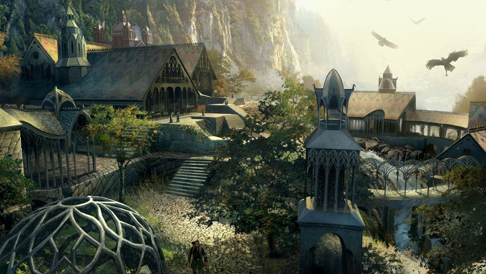
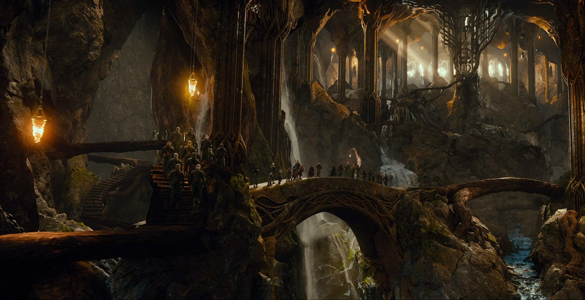

A Table of the Great Elven Realms of the Fourth Age
Below is a record of the most notable Elven Realms across Middle-Earth and Valinor.
| Realm | Location | Ruler | Known For | Current Status |
|---|---|---|---|---|
| Lothlórien | Golden Wood | Galadriel & Celeborn | Beauty and Light | Ruined and Abandoned |
| Rivendell | Rivendell, Eriador | Elrond Half-elven | Sanctuary of Wisdom | Ruined and Abandoned |
| Mirkwood | Woodland Realm | Thranduil | Elven Halls & Forests | Ruined and Abandoned |
| Grey Havens | Mithlond, Eriador | Círdan the Shipwright | Port to the West | Ruined and Abandoned |
| Valinor | Undying Lands | Eru Ilúvatar "God" | Eternal Rest | Ever Lasting |
The Land of Lothlórien

Lothlórien, the fairest of the Elven realms in Middle-Earth, was a timeless land of beauty and light, ruled by Galadriel and Celeborn from their city in the trees, Caras Galadhon. This enchanted forest, located between the Misty Mountains and the River Anduin, stood as a bastion of Elven resistance against the Dark Lord Sauron. With the power of Galadriel's Ring, the forest remained hidden from Sauron's gaze, offering a safe haven to the Company of the Ring during their journey. However, after the War of the Ring, the Elves could no longer preserve Lothlórien. The Rings no longer held the power. Lorien began to slow decay, and eventually, the Lorien Elves departed. Legolas, many years later, visited the now empty realm, describing it as a quiet, lifeless place where the trees had lost their color. After Legolas's departure, his father, Thranduil, remained the last Elven King in Middle-Earth. Together with the remaining Elves of Mirkwood and Avari; Thranduil led the final Elven march to the Grey Havens. As they passed through the fading woods of Lothlórien, the Elves gave one last farewell with a blast from their Elven horns, marking the end of an age as they departed for the Undying Lands to never return again.
The Land of Rivendell
Rivendell, also known as Imladris, is a hidden valley nestled at the foot of the Misty Mountains, east of the Trollshaws. It is renowned as the home of Elrond, the Half-Elf lord, and serves as a sanctuary for Elves, travelers, scholars, and adventurers. The valley is a place of healing, wisdom, and peace, where the gentle beauty of the land reflects the serenity of its inhabitants. At sunset, the hills glow with a soft pink and yellow hue, creating a picturesque view from the Last Homely House, Elrond's residence, located near the Falls of Imladris. It is here that Frodo Baggins, wounded by the Morgul blade, was brought to safety. Elrond's House is also the center of knowledge, housing Elrond's vast library filled with ancient tomes and scrolls. Scholars from all over Middle-Earth come to study in the Scholar's Guild hall, and adventurers often seek Elrond's wisdom and counsel. In The Fellowship of the Ring, Bilbo described Rivendell as “a perfect house,” where visitors could find rest, healing, and peace. Its warm hearth, quiet rooms, and rich stories were a cure for weariness and fear. It became a haven for many during the dark times of the War of the Ring, and its influence was crucial in shaping the fate of Middle-Earth. After the War of the Ring, Elrond left Rivendell. The final visitors to the Last Homely House were Celeborn Lord of Lorien, and his small host of Lórien Elves that stayed with him and Noldor elves, the last of their kind to remain in Middle-Earth. Galadriel had already departed earlier with a great host of Lórien elves, leaving Celeborn as the final guardian of Rivendell. Before leaving, Celeborn sent a message to Thranduil, the Elven King of Mirkwood, informing him that the gates of Rivendell were now locked and the city would soon be lost to time, overtaken by the wilderness as the Elves age in Middle- Earth came to an end. And so, Rivendell, once a thriving sanctuary of Elven knowledge and culture, faded into memory.
The Land of Mirkwood
Felegoth, located in Eryn Lasgalen (Northern Mirkwood), is the home of King Thranduil and the Wood Elves. The Halls of the Elvenking, primarily underground, are an intricate cave system beneath the forest. Unlike the dark, damp Dwarven halls, Felegoth is bright and lush, with gardens and natural beauty, though the caves still hold a darker side. The dungeon cells, where Thorin Oakenshield and his companions were once held, remain a reminder of its dual purpose as both a palace and a fortress.
Felegoth was the heart of Mirkwood, the last stronghold of the Elves in the East, and a place of peace amidst the dark forest. But after the War of the Ring, as the Fourth Age began, Thranduil, the last of the Elven Kings, ruled over the final remnants of the Elves in Middle-Earth. With the passing of the Elves and the waning of their power, the King felt the call of the Sea.
When the time came, King Thranduil gathered all Elves who remained in Middle-Earth. The Silvan and Sindar Elves of his realm, the Noldor who still lingered, and even the distant Avari from the eastern lands. Together, they prepared for one final journey. Before departing, Thranduil commanded his guards to lock the gates of Felegoth and destroy the bridge that crossed its river, so that no man or dwarf could ever claim his halls. The torches were extinguished, and silence fell upon the caves of the Woodland Realm.
Their march westward began in quiet solemnity. Through the desolate paths of Mirkwood they walked, the starlight pale through the thinning trees. When they reached Lothlórien, they found it lifeless. The Mallorn leaves no longer golden, the air heavy and still. Upon a low hill beneath the fading trees, they discovered the resting place of Arwen Undómiel, where she had laid down her life. There King Thranduil ordered a grave of white stone to be raised, carved with runes of the Eldar, and the Elves sang their final song for her; a lament so touching that even the wind ceased to stir.
As they departed Lórien, the Elven horns sounded for the last time. Their echoes carried through the dying forest. A final farewell to an ages that would never return. The sound drifted like sorrow itself, fading into silence as they passed beyond the Anduin.
Their road led them to Rivendell, now a ruin overgrown with ivy and moss. The terraces once filled with light and song were shrouded in shadow. King Thranduil stood upon the broken steps of Elrond's House, remembering the days when the valley was alive with laughter and wisdom. He bowed his head in respect, then turned away. For even the memory of Rivendell was fading into myth.
At last they reached the Grey Havens. The sea wind was cold and clear, carrying with it the scent of eternity. There the last ships awaited, shimmering with faint light upon the water. Thranduil stood upon the shore as the waves lapped at his feet, his silver crown glinting one final time beneath the setting sun. He gazed back eastward toward the lands of Men; to forests now empty, mountains veiled in mist, and rivers that no longer remembered their songs.
Then, without a word, he boarded the ship. As the sails caught the wind, the vessels glided westward across the sea, toward Valinor, where his son Legolas, and father Oropher, and ancient kindreds awaited him. The ships vanished into the light beyond the horizon, and with them passed the last breath of Elvendom in Middle-Earth.